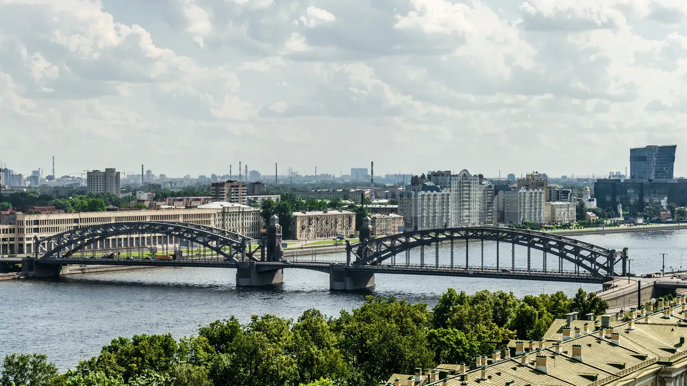

Молодёжный клуб
Адреналин
ул. Белорусская, д. 6, корп. 2 и 3
Смотреть площадку
Молодёжные площадки района
Клубы и молодёжные пространства МЦ «Охта». Выбери площадку по адресу или интересу.
Смотреть площадкиСведения сверены по открытым источникам. Набор, расписание и условия уточняй у организатора.
Каталог района
Ищи по названию, адресу или направлению.
Показано 22 площадки
ул. Белорусская, д. 6, корп. 2 и 3
Смотреть площадкуул. Ленская, д. 5
Смотреть площадкуул. Казанская, д. 14
Смотреть площадкуИндустриальный пр., д. 7
Смотреть площадкупр. Энергетиков, д. 70, корп. 3
Смотреть площадкуул. Тарасова, д. 11
Смотреть площадкуул. Ленская, д. 8, корп. 2
Смотреть площадкуЗаневский пр., д. 12
Смотреть площадкупр. Энергетиков, д. 50
Смотреть площадкуБольшеохтинский пр., д. 19
Смотреть площадкуул. Коммуны, д. 32, корп. 5
Смотреть площадкуМалоохтинский пр., д. 92
Смотреть площадкуул. Передовиков, д. 16, корп. 2
Смотреть площадкупр. Металлистов, д. 19/30
Смотреть площадкупр. Маршала Блюхера, д. 36/1
Смотреть площадкуБольшеохтинский пр., д. 41
Смотреть площадкуул. Корнея Чуковского, д. 3, корп. 1
Смотреть площадкуул. Республиканская, д. 18, корп. 1
Смотреть площадкупр. Шаумяна, д. 31
Смотреть площадкупр. Маршала Тухачевского, д. 41
Смотреть площадкуСеверный пр., д. 127/2
Смотреть площадкуСреднеохтинский пр., д. 14
Смотреть площадкуПодходящих площадок не найдено. Попробуй другой запрос.
Связаться с учреждением
Контакты учреждения
Полюстровский пр., д. 3
Перед посещением
Спроси, для кого открыта группа.
Проверь дни, время и наличие мест.
Узнай, как присоединиться.
Состав, названия и адреса сверены по действующей странице контактов МЦ «Охта». Примеры бесплатных направлений взяты из городского PDF, загруженного 01.06.2026. В нём 21 площадка, а в текущем списке центра 22: для пространства «4К» направления уточняются.
Фото Большеохтинского моста: Алексей Фёдоров, Wikimedia Commons, CC BY-SA 4.0. Изображение кадрировано и сжато.